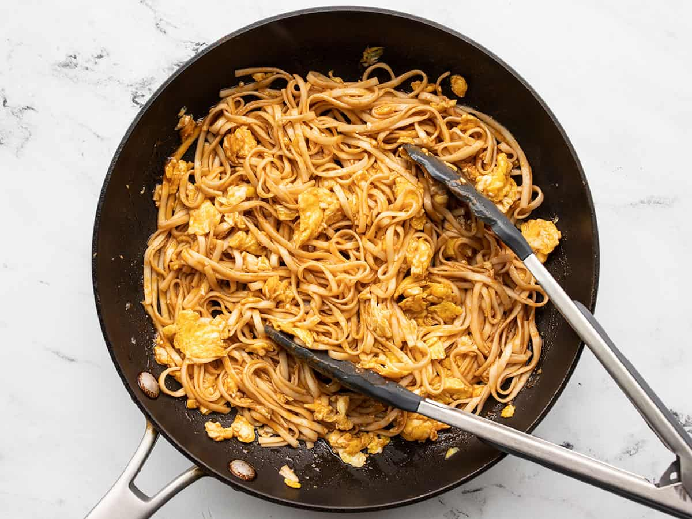
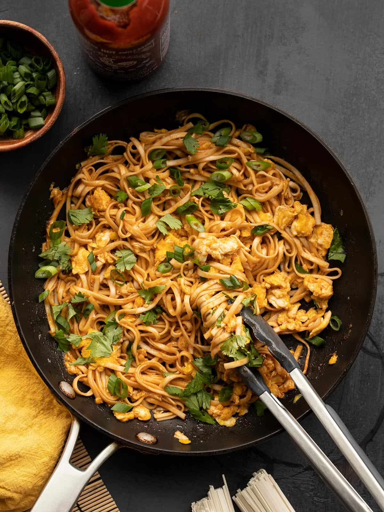
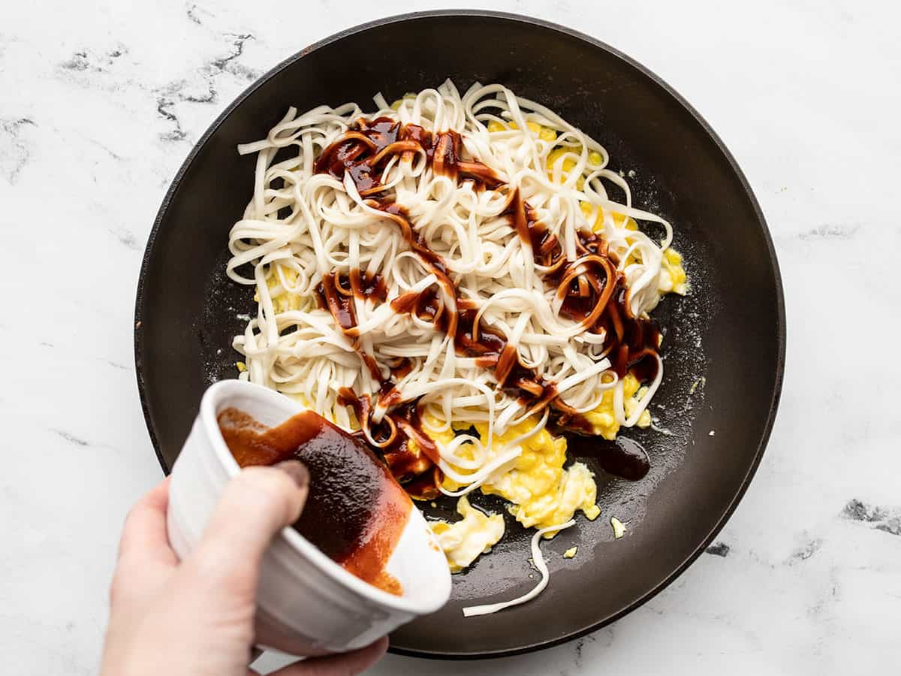

Chef Shane's Recipes!
Dragon Noodles
This is what you need to make:
- 4 oz. lo mein noodles
- 2 Tbsp butter
- 1/4 tsp crushed red pepper
- 2 large eggs
- 1 Tbsp brown sugar
- 1 Tbsp soy sauce
- 2 Tbsp sriracha
- 1 Handful Fresh cilantro
- 1 green onion, sliced
This is how you make it...
- In a small bowl, stir together the brown sugar, soy sauce, and sriracha. Set the sauce aside.
- Boil some water, add the noodles and boil until tender. Drain the noodles in a colander.
- While waiting for the water to boil, crack two eggs into a bowl then whisk lightly.
- Heat the butter in a skillet over medium heat, then add the eggs and crushed pepper and lightly scramble the eggs. Avoid over cooking the eggs.
- Once the noodles have drained, add them to the skillet with the eggs, then drizzle the sauce over top. Toss the noodles and eggs to coat in the sauce.
- Top the noodles with fresh cilantro and sliced green onion, then serve.
| Mixing the Ingredients |
Almost There... |
Adding Soy Sauce |
|  |
 |
 |